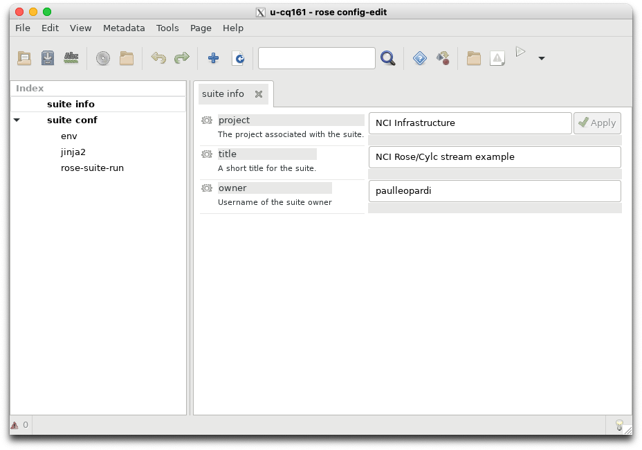
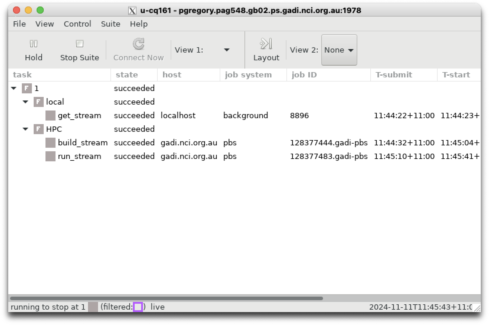

MOSRS#
The UK Met Office Science Repository Service (MOSRS) is located at: https://code.metoffice.gov.uk/self-service/. The repository contains all the files and documentation required for the UK Met Office to co-ordinate research between itself, partner meteorological agencies (e.g. Australia’s Bureau of Meteorology, Meteorological Service Singapore, New Zealand’s NIWA etc.) and research partners (e.g. University of Reading, ACCESS-NRI, University of Melbourne, ANU etc.)
Once you have access to MOSRS you will be able to download rose/cylc suites onto gadi and begin performing your weather and climate simulations.
Let’s run a very small rose/cylc suite via the UK Met Office MOSRS service.
Before doing so, we will start what is called a ‘persistent session’ on gadi.
Persistent sessions#
What is a persistent session and why do we need it? Because gadi ARE sessions have strict time limits, as does the PBS job scheduler. Individual PBS jobs on gadi have a time limit of 48 hours, see
https://opus.nci.org.au/pages/viewpage.action?pageId=236881198
If we are running a weather or climate session that will take days (or weeks, or months!) to run, we need an ability to co-ordinate all these sub-tasks for an extended period of item.
Hence, NCI has created the persistent sessions capability. It creates a temporary virtual machine which runs indefinitely. This allows us to launch a rose/cylc suite without any time limits.
NCI has the following documentation describing how to setup and configure persistent sessions for running rose/cylc suites:
https://opus.nci.org.au/display/DAE/Persistent+Sessions+For+Cylc+Jobs
ACCESS-NRI also has the following guide:
The above link refers to the ACCESS-CM3 model but it can be applied to any applications run with a rose/cylc suite. To follow the ACCESS-NRI guide, start a session at the command line, e.g.
$ persistent-sessions start <session-name> -p <project>
session db78f6e1-aef2-b7ba-03fb-b8768f0a84e1 running - connect using
ssh <session-name>.<user-id>.<project>.ps.gadi.nci.org.au
where you will substitute your own values of <session-name>, <user-id> and <project>, make sure the file ~/.persistent-sessions/cylc-session contains the session name, i.e.
$ more ~/.persistent-sessions/cylc-session
<session-name>.<user-id>.<project>.ps.gadi.nci.org.au
Then login to the session.
$ ssh -Y <session-name>.<user-id>.<project>.ps.gadi.nci.org.au
After logging in, the bash login prompt will change from <user-id.@gadi-login etc. to <user-id>@<session-name>.
As mentioned here in the previousrose/cylc tutorials, you can use an alias to help load the cylc modules. You can define a start_rose alias inside your ~/.bash_profile file,
# User specific aliases and functions
alias start_rose="module use /g/data/hr22/modulefiles;module load cylc7"
An alias allows you to execute multiple commands by typing start_rose inside my persistent session:
$ start_rose
which will generate output similar to
Using the cylc session <session-name>.<user-id>.<project>.ps.gadi.nci.org.au
Loading cylc7/24.03
Loading requirement: mosrs-setup/2.0.1
Danger
If you have the conda/analysis3 module loaded, you WILL NOT be able to ssh to your persistent session, due to a conflict between the ssh installation contained in that module and the global ssh configuration used at NCI. The analysis3 installation cannot access any of the ssh options that are needed to access the persistent sessions (such as the port and which SSHkey to use). You will need to unload the analysis3 module from you current environment using
$ module unload conda/analysis3
Warning
If you are not yet a member of the access gadi project, you will not be able run ACCESS/UM suites using a persistent session. You will be able to complete this tutorial, but you won’t be able to complete the next one, or run any ACCESS suites. See here for more information.
Note
You will have to restart your sessions after quarterly maintenance.
MOSRS authentication#
Once you have connected to your persistent-session, you will have to load the required rose/cylc modules and then authenticate with the central MOSRS repository.
A successful authentication will look like.
$ mosrs-auth
INFO: You need to enter your MOSRS credentials here so that GPG can cache your password.
Please enter the MOSRS password for <username>>:
INFO: Checking your credentials using Subversion. Please wait.
INFO: Successfully accessed Subversion with your credentials.
INFO: Checking your credentials using rosie. Please wait.
INFO: Successfully accessed rosie with your credentials.
If you are having trouble authenticating, have a look through this thread:
https://forum.access-hive.org.au/t/mosrs-authentication-error-checking-password/3665
Checking out a suite#
Let’s run a tiny test suite developed by Paul Leopardi at ACCESS-NRI. You can find the full documentation here :
ACCESS-NRI/training-day-2024-regional_model
You can check out Paul’s suite using the rosie check out command,
$ rosie co u-cq161
which creates a local copy of the rose/cylc suite at ~/roses/u-cq161.
If you launch rose edit from your roses/u-cq161 directory, you should see this:

Let’s walk through the suite.rc file using your favourite text editor (or even using the bash command-line tool more) to see what this suite will do.
The [scheduling] section tells us which tasks will run, and in which order. This suite only contains three tasks:
get_stream => build_stream => run_stream
The [runtime] section tells us how these tasks will run.
Firstly there are three sections (or namespaces) which define the local environment: [[root]], [[local]] and [[HPC]]. These sections define where the suite will run and the necessary PBS job specifications.
Each task is defined by its own namespace: [[get_stream]], [[build_stream]] and [[run_stream]].
The first task [[get_stream]] inherits the [[local]] namespace and runs the get_stream script after executing some preliminary bash commands.
The second task [[build_stream]] inherits the [[HPC]] namespace and executes the build_stream script.
The last task [[run_stream]] inherits the same namespace and executes the run_stream script.
To see what each script does, you can view the contents of each script which are located in ~/roses/u-cd161/bin.
The script get_stream downloads code from
The README file on the website shows that STREAM is a standard package used to benchmark sustained memory bandwidth on supercomputers. It consists of fortran and C source files and a Makefile which compiles these source files using gfortran and gcc compilers.
The script build_stream runs the make command to build the executables. The suite.rc contain logic to ensure we are in the correct directory to build the source files.
The script run_stream executes the C based executable stream_c.exe.
Running the suite#
Let’s run the suite from ~/roses/u-cq161/ directory:
$ rose suite-run
This will launch the cylc GUI, which should resemble the following upon completion. You will have to click on the local and HPC namespaces to expand the task lists.

Note how the PBS job submission details (where relevant) are included in the cylc GUI.
Let’s examine the suite output by viewing the contents of the run directory.
$ cd ~/cylc-run/u-cq161/
Let’s examine the log files, noting that log is a symbolic link that links to the latest version of the log.YYYYMMDDTHHMMSSZ directory - i.e. the timestamp of the directory creation time is appended to the log directory name in GMT or ‘Zulu’ time, hence the ‘Z’.
You can view the contents of the actual run_stream cylc job, i.e. what the persistent session submitted to the gadi PBS job queue by examining : ~cylc-run/u-cq161/log/job/1/run_stream/NN/job.
You can also see how this script wraps the contents of the rose task app (from suite.rc) inside a bash function called cylc__job_inst__script.
The job then sources a file called . "${CYLC_DIR}/lib/cylc/job.sh". This file can be found at /g/data/hr22/apps/cylc7/cylc_7.9.7/lib/cylc/job.sh.
The job then calls the bash function cylc__job__main.
If you are curious about how these bash functions are executed, you can examine : /g/data/hr22/apps/cylc7/cylc_7.9.7/lib/cylc/job.sh.
To view the output of run_stream, you can view : ~/cylc-run/u-cq161/log/job/1/run_stream/NN/job.out.
The output will show the job successfully completed and it will include the following summary of gadi resources used to run this task.
-------------------------------------------------------------
Number of Threads requested = 1
Number of Threads counted = 1
-------------------------------------------------------------
Your clock granularity/precision appears to be 1 microseconds.
Each test below will take on the order of 11507 microseconds.
(= 11507 clock ticks)
Increase the size of the arrays if this shows that
you are not getting at least 20 clock ticks per test.
-------------------------------------------------------------
WARNING -- The above is only a rough guideline.
For best results, please be sure you know the
precision of your system timer.
-------------------------------------------------------------
Function Best Rate MB/s Avg time Min time Max time
Copy: 14388.7 0.021873 0.011120 0.041481
Scale: 9595.8 0.020599 0.016674 0.028780
Add: 12793.9 0.029634 0.018759 0.044448
Triad: 10577.8 0.029515 0.022689 0.053290
-------------------------------------------------------------
Solution Validates: avg error less than 1.000000e-13 on all three arrays
-------------------------------------------------------------
2024-11-11T11:45:42+11:00 INFO - succeeded
======================================================================================
Resource Usage on 2024-11-11 11:45:46:
Job Id: 128377483.gadi-pbs
Project: gb02
Exit Status: 0
Service Units: 0.00
NCPUs Requested: 1 NCPUs Used: 1
CPU Time Used: 00:00:02
Memory Requested: 1.0GB Memory Used: 253.33MB
Walltime requested: 00:10:00 Walltime Used: 00:00:03
JobFS requested: 100.0MB JobFS used: 0B
======================================================================================
This was quite a small task. We only requested 1 GB of memory using one CPU. We only used 253 MB of memory and the task took less than one second to complete.
Any errors that occurred during the task will be output via standard error to ~/cylc-run/u-cq161/log/job/1/run_stream/NN/job.err.
There are no error messages, only the outputs of loading your rose/cylc module environment.
Now, let’s move onto running an atmospheric simulation using the UK Met Offices’ ‘Unified Model’.